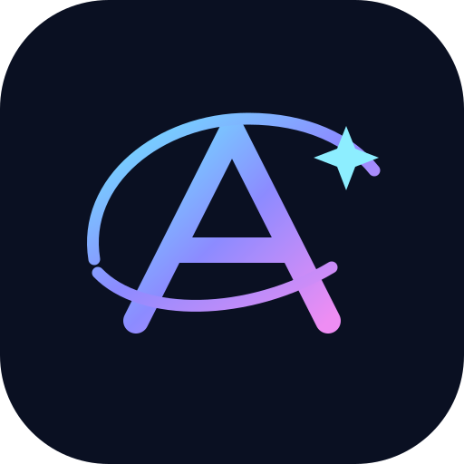
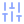

Aurora · conjunto vetorial
Cyan · azul · violeta · magenta. Geometria Lucide, marca Aurora original.

Logo Aurora PlayPauseSquareSkipForwardSkipBack
PlayPauseSquareSkipForwardSkipBack Shuffle
Shuffle Repeat
Repeat Heart
Heart ListMusicHouse
ListMusicHouse Library
Library SearchCompass
SearchCompass Radio
Radio AudioLines
AudioLines
SlidersVertical MoonSunSettingsUserRoundDownloadUploadFolderMonitor
MoonSunSettingsUserRoundDownloadUploadFolderMonitor Volume2VolumeX
Volume2VolumeX